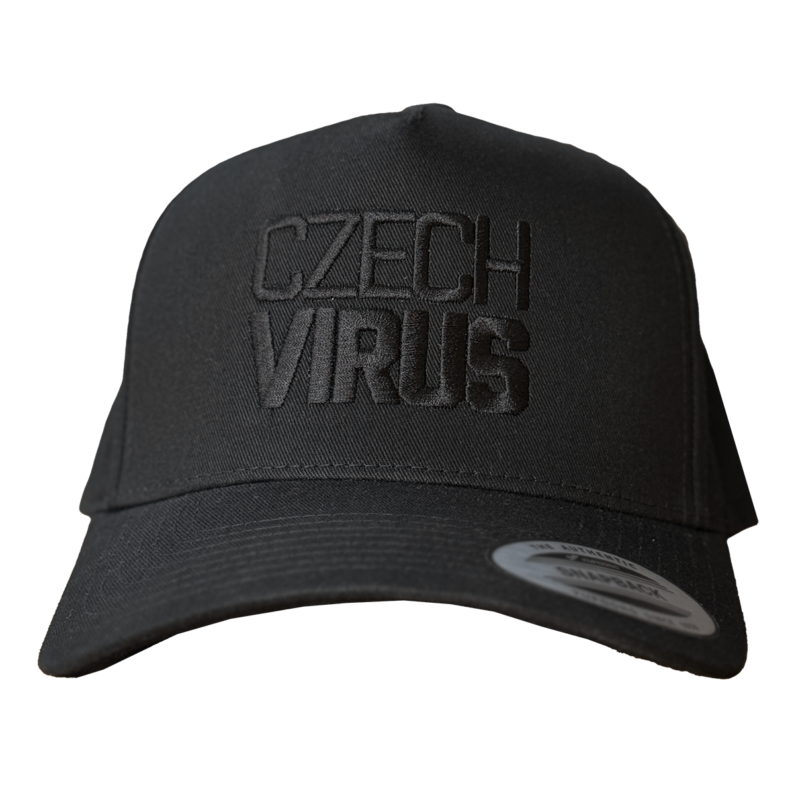
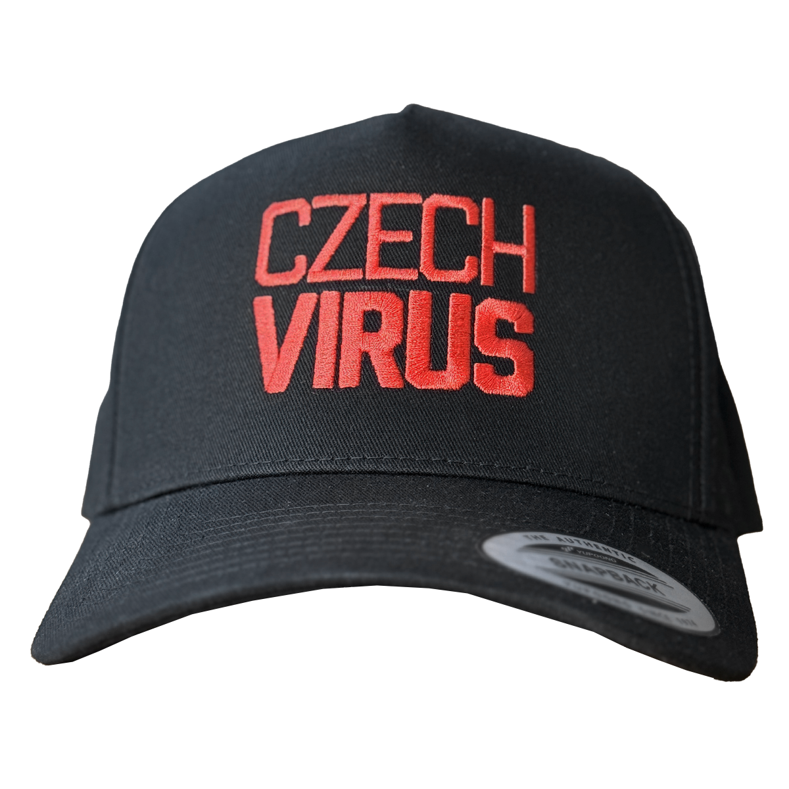

Czech Virus® Merch
Kšiltovka Virus Performance Czech Virus®
Kšiltovka Virus Performance je klasická baseballová kšiltovka s prohnutým kšiltem, která nikdy nevyjde z módy. Černá flexfit konstrukce s testovaným vzorem VIZ zajišťuje perfektní padnutí na každou hlavu.
Výšivka na celé ploše výšky 5 cm dodává kšiltovce čistý a sebevědomý vzhled. Dostupná ve třech barevných variantách loga – černá pro stealth, bílá pro klasiku, červená pro statement.
Proč zvolit
Kšiltovka Virus Performance Czech Virus®?
Detaily & zpracování
Klasika, která nikdy nezklame
Baseballová kšiltovka s prohnutým kšiltem je ikonický kus oblečení, který funguje v každé situaci. Kšiltovka Virus Performance bere tuto klasiku a přidává k ní kvalitu a styl Czech Virus®.
Flexfit konstrukce s VIZ testovaným vzorem znamená, že kšiltovka sedne perfektně bez nutnosti nastavování. Žádné plastové spony vzadu, žádné problémy s velikostí – prostě nasaď a jdi.
Prohnutý kšilt poskytuje klasický vzhled a zároveň ochranu před sluncem. Černá barva s kontrastní výšivkou zajišťuje, že kšiltovka vypadá čistě a ostře. Výšivka Czech Virus® výšky 5 cm pokrývá celou přední plochu a vytváří sebevědomý statement.
.jpg)
Pohled zblízka
Kšiltovka v akci
.jpg)
.jpg)
.jpg)
Tři varianty loga
Vyber si svou barvu
Všechny tři varianty mají identickou konstrukci a zpracování. Liší se pouze barvou výšivky – černá pro stealth look, bílá pro klasický kontrast, červená pro agresivní vibe.

Černá
Bílá

Červená